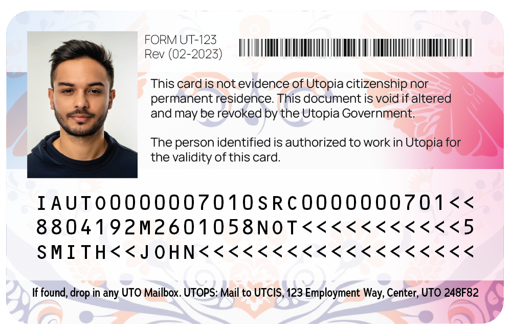
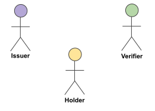

Credentials are a part of our daily lives; driver’s licenses are used to assert that we are capable of operating a motor
vehicle, university degrees can be used to assert our level of education, and government-issued passports enable us to
travel between countries. The family of W3C Recommendations for Verifiable Credentials, described in this overview document,
provides a mechanism to express these sorts of credentials on the Web in a way that is cryptographically secure, privacy
respecting, and machine-verifiable.
Introduction
This document provides a non-normative, high-level overview for W3C’s [=Verifiable Credential=] specifications and serves as
a roadmap for the documents that define, describe, and secure these credentials. It is not the goal of this document to be
very precise, nor does this overview cover all the details. The intention is to provide users, implementers, or anyone
interested in the subject, a general understanding of the concepts and how the various specifications, published by the
Verifiable Credentials Working Group, fit together.
Ecosystem Overview
The Verifiable Credential specifications rely on an ecosystem consisting of entities playing different “roles”. The main
roles are:
[=Issuer=]
An entity that creates a Verifiable Credential, consisting of a series of statements related to its subject. An
example is a university that issues credentials for university degrees or certificates for alumni.
[=Holder=]
An entity that possesses one or more Credentials, and that can transmit presentations of those
Verifiable Credentials to third parties. An example may be the person who "holds" his/her own educational degrees.
Another example may be a digital wallet that contains several Credentials on someone's behalf.
[=Verifier=]
An entity that performs verification on a Verifiable Credential to check the validity, consistency, etc., of a
Credential. An example may be an employer's digital system that checks the validity of a university degree before
deciding on the employment of a person.
For a more precise definition of these roles, as well as other roles, see the relevant
section in the data model specification.
The roles and information flows forming the basis for the VC Data Model.
High Level View of the Specifications
provides an overview of the main building blocks for Verifiable Credentials, including their
(normative) dependencies. For more details, see the subsequent sections in this document.
Verifiable Credentials Working Group Recommendations (the figure is also
available in SVG).
The [[[vc-data-model]]] [[vc-data-model]] specification, which defines the core concepts that all other specifications
depend on, plays a central role. The model is defined in abstract terms, and applications express their specific credentials
using a serialization of the data model. The current specifications use a JSON serialization; the community may develop
other serializations in the future.
When Verifiable Credentials are serialized in JSON, it is important to trust that the structure of a Credential may be
interpreted in a consistent manner by all participants in the verifiable credential ecosystem. The
[[[vc-json-schema]]] [[vc-json-schema]] defines how [[json-schema]] can be used for that purpose.
The [[[vc-confidence-method]]] [[vc-confidence-method]] specification defines an extensible mechanism that issuers can use
to increase the confidence of verifiers in the legitimacy of the presentation of a given credential.
The [[[vc-render-method]]] [[vc-render-method]] specification defines an extensible mechanism that issuers can use to
provide preferred mechanisms for the presentation of a credential. These presentations may use images, simple cards in a
digital wallet, braille output, or complex visual presentations.
Credentials can be secured using two different mechanisms: [=enveloping proofs=] or [=embedded proofs=]. In both cases, a
Credential is cryptographically secured by a proof (for example, using digital signatures). In the enveloping case, the
proof wraps around the Credential, whereas embedded proofs are included in the serialization alongside the Credential
itself.
A family of enveloping proofs is defined in the [[[vc-jose-cose]]] [[vc-jose-cose]] document, relying on technologies
defined by the IETF. Other types of enveloping proofs may be specified by the community.
The general structure for embedded proofs is defined in a separate [[[vc-data-integrity]]] [[vc-data-integrity]]
specification. The Working Group also specifies instances of this general structure in the form of the
cryptosuites: [[[vc-di-eddsa]]] [[vc-di-eddsa]],
[[[vc-di-ecdsa]]] [[vc-di-ecdsa]], [[[vc-di-bbs]]] [[vc-di-bbs]], and
[[[vc-di-quantum-resistant]]] [[vc-di-quantum-resistant]]. Other cryptosuites may be specified by the community.
The [[[cid]]] [[cid]] specification defines some common terms (e.g., verification
relationships and
methods) that are used not only by other Verifiable Credential
specifications, but also other Recommendations such as [[[did-core]]] [[did-core]].
The [[[vc-barcodes]]] [[vc-barcodes]] specification defines an efficient way to represent a Verifiable Credential in the
form of an optical barcode.
The [[[vc-bitstring-status-list]]] [[vc-bitstring-status-list]] specification defines a privacy-preserving, space-efficient,
and high-performance mechanism for publishing the status of a specific Verifiable Credential, such as its suspension or
revocation, through the use of bitstrings.
The [[[vc-forgery-defense]]] [[vc-forgery-defense]] specification defines a mechanism for issuers of Verifiable Credentials
to publish indexed lists of compact cryptographic witnesses. This is an extra layer of security for Credentials that are
already issued, but whose signature keys may potentially be compromised.
The Verifiable Credential ecosystem relies on the ability of verifiers to determine whether a particular issuer is
recognized to perform a particular action. The [[[vc-recognized-entities]]] [[vc-recognized-entities]] specification defines
an interoperable mechanism to express and communicate the recognition of entities that perform known actions like issuing or
verifying credentials.
The [[[vcalm]]] [[vcalm]] specification defines an HTTP APIs among the entities corresponding to the main “roles” in the
Verifiable Credential model (i.e., issuer, holder, and verifier, see also ). The specification
also provides a reference model for components within these roles, with the corresponding APIs among those
components.
In 2025, a number of documents were published as W3C Recommendations, which is the W3C terminology for Web Standards.
The two exceptions were the [[[vc-json-schema]]] and the [[[vc-di-bbs]]] specifications; though technically complete,
they are still Candidate Recommendations. The reasons are different. The former has not yet been implemented by at least
two mutually independent implementations (which is the requirement to be published as a standard) whereas the latter has
to wait until the underlying cryptographic technique (i.e., [[[cfrg-bbs-signature]]]) is finalized by the IETF. It is
expected that these two documents will be published as Web Standards eventually.
A revision cycle for some of the specifications has started in 2026. Some documents have been re-issued as Working
Drafts (marked with a higher minor version number), and a number of new specifications have been added to become,
eventually, Recommendations as well. The official
publication list of the Working Group shows the exact status
of the respective documents.
The Verifiable Credentials Data Model
Claims, Properties
A core concept is “claims”: statements made about various entities, referred to as “subjects”. Subjects may be a person
(e.g., the person holding a university degree), an animal, an abstract concept, another Credential, etc. Claims may also
be on the enclosing Credential itself, such as issuance date, validity periods, etc. (Such claims are also loosely
referred to as “credential metadata”.)
Claims are expressed using “properties” referring to “values”. Values may be literals, but may also be other entities
referred to, usually, by a [[URL]]. In that case, that entity may become the subject of another claim; these claims,
together, form a graph of claims that represents a Credential. (See for an
example of such a graph represented graphically. For more complex examples, refer to the [[[vc-data-model]]]
specification itself.)
The basic structure of a claim with (in this case) a literal value.
The [[[vc-data-model]]] document specifies a number of standard properties. These include, for example,
`credentialSubject`, `type`, `issuer`, or `validFrom`. Developers may define their own properties to express specific
types of Credentials, like a driving license, a university degree, a marriage certificate, or a Digital Product
Passport.
Core Concepts
Credentials
A Credential is a set of one or more claims made by the same entity.
Credentials might also include an identifier and metadata to describe properties of the Credential, such as a
reference to the issuer, the validity date, a representative image, the revocation mechanism, and so on. A
[=Verifiable Credential=] is a set of claims and metadata (i.e., a Credential) that also includes verification
mechanisms that cryptographically prove who issued it, ensures that the data has not been tampered with, etc.
For a more detailed description of abstract Verifiable Credentials, with examples, see the relevant
section in the data model specification.
Basic components of a Verifiable Credential.
Presentations
Enhancing privacy is a key design feature of Verifiable Credentials. Therefore, it is important, for entities using
this technology, to be able to express only the portions of their persona that are appropriate for a given
situation. The expression of a subset of one's persona is called a [=Verifiable Presentation=]. Examples of
different personas include a person's professional persona, their online gaming persona, their family persona, or an
incognito persona.
A Verifiable Presentation is created by a holder, can express data stemming from multiple Verifiable Credentials,
and can contain additional metadata in forms of additional claims. They are used to present claims to a verifier. It
is also possible to present Verifiable Credential directly.
A Verifiable Presentation is usually short-lived, it is not meant to be stored for a longer period.
For a more detailed description of abstract Verifiable Presentations, with examples, see the relevant
section in the data model specification.
Basic components of a verifiable presentation.
JSON Serialization
In the [[vc-data-model]] specification, as in the other documents, Verifiable Credentials and Presentations are mostly
expressed in JSON [[rfc7519]], more specifically [[[json-ld11]]] [[json-ld11]]. In this serialization, properties of
claims are represented as JSON names, and values as JSON literals or objects. Subjects of claims are either explicitly
identified by an `id` property, or implicitly by appearing as an object of another claim. JSON-LD is useful because it
enables the expression of the graph-based data model on which verifiable credentials are based, it has a
machine-readable semantics, and is also useful when extending the data model. (See the
relevant section in the [[vc-data-model]] specification.)
Standard properties defined by the [[vc-data-model]] form a distinct set of JSON names, referred to as a (standard)
vocabulary. An important characteristic of Verifiable Credentials in JSON-LD is that it favors a decentralized
and permissionless approach to extend to a new application area through application-specific set of properties,
i.e., vocabularies, distributed on the Web. Anyone can “publish” such a vocabulary, following some rules described in
the extensibility section of the specification.
The following JSON-LD code is an example for a simple Credential. It states that the person named “Pat”, identified by
https://www.example.org/persons/pat, is an alumni of the Example University (identified by
did:example:c276e12ec21ebfeb1f712ebc6f1). The Credential is valid from the 1st of January 2010, and is
issued by an entity identified by did:example:university.example:CSSchool. Most of the properties in the
Credential are from the standard Verifiable Credentials vocabulary (identified by
https://www.w3.org/ns/credentials/v2), but some terms (like `alumniOf`, `AlumniCredential`) are added by
the application-specific vocabulary referred to by https://www.w3.org/ns/credentials/examples/v2.
shows the same Credential, but represented as a graph of claims, as described
in .
The Credential in represented as a collection of claims.
The Alumni Credential in is used as a basis throughout this document to show how to apply
additional features defined by the various specifications.
The Credential in , issued by Example University, is stored by a holder (who may be a
person, a digital wallet, or any other entity). On request, the holder may “present” the Credential to a verifier,
encapsulated in a Presentation. This is how the Credential looks like in the JSON-LD serialization:
Note that the holder could have presented several Credentials within the same presentation, or create a new Credential
by either combining it with others or removing some claims as irrelevant for the specific context.
Extensions
This section describes additional (and optional) features that an issuer may choose to use to extend the core
Credential.
Confidence Methods
The [[[vc-confidence-method]]] [[vc-confidence-method]] specification defines a mechanism that issuers can use to
increase the confidence of verifiers in the legitimacy of the presentation of a given credential. An analogy is
checking a driving license: when the police officer (the “verifier”) gets hold of the license, they would first
compare the photograph on the physical license to compare it with the face of the driver. This raises the confidence
of the police officer that the driver is indeed the “subject” of the license (the “credential”).
The specification adds the concept of a
Confidence Method to the core model. It defines
mechanisms the verifier can use to increase its confidence that a subject of the VC is also the subject of another
interaction. For example, the issuer might provide a public key of the subject; the verifier could use a
proof-of-use protocol to establish that the current user indeed holds the corresponding secret key by signing
cryptographic challenges. A more complex verification method might be based on biometrics, like embedding raw
biometric data (photograph, audio recordings, fingerprint data), or biometric vectors, i.e., compact
mathematical representations produced by a specific model that can be used for matching. Some of these methods are
defined in the specification, but specific communities may extend the model with other, proprietary approaches.
The list of methods in the specification is to be finalized in the coming months.
Rendering Methods
The issuer of a credential may also have preferred ways to express a verifiable credential to an observer. For
example, an issuer of the university alumni badge might want to include rich imagery of their university logo and
specific placement of the alumni information in specific areas of the badge. The
[[[vc-render-method]]] [[vc-render-method]] specification defines an extensible mechanism that issuers may use to
provide these preferred mechanisms for the presentation of a credential. These presentations may use of images,
simple cards for a digital wallet, braille output, or complex visual presentations.
The specification adds the
renderMethod property to the data model
for the issuer to use. The value of that property is an object, whose claims provide the necessary parameters for a
specific render method. The document also includes some specific render methods that can be used. These include:
JSON cards: a mechanism whereby a credential is transformed into a standardized JSON format that wallets can
render using their own UI designs. The JSON card format includes the possibility to restrict the credential's
statements to be displayed.
A generic, HTML+JavaScript render suite, that performs the final rendering of the credential via a sandboxed
HTML iframe. The HTML snippet is provided by the issuer. This approach is well adapted to Web browsers, but also
to mobile applications using WebView, and makes use of the
rich possibilities offered by Web APIs.
Communities may define their own render methods.
adds an HTML-based render method to our alumni example. Note the usage of the
digestMultibase property which adds an extra security to the choice of the HTML snippet. The snippet
itself can be retrieved using the university’s dedicated URL.
Checking with JSON Schemas
A significant part of the integrity of a Verifiable Credential comes from the ability to structure its contents so
that all three parties — issuer, holder, verifier — may have a consistent mechanism of trust in interpreting the
data that they are provided with. One way of doing that is to use [[json-schema]] to check the structural validity
of the Credential. The [[[vc-json-schema]]] [[vc-json-schema]] specification adds standard properties to express the
association of a Credential with a JSON Schema.
Consider the following example:
When dereferenced, the URL `https://university.example/Credential-schema.json` should return a JSON Schema, for
example:
Using this JSON Schema, a verifier can check whether the Credential is structurally valid or not.
For security reasons one may want to go a step further: check/verify the JSON Schema itself to see if, for example,
it has been tampered with. This can be done by referring to the JSON Schema
indirectly through a separate Verifiable Credential. The reference to such a Verifiable Credential looks
very much like except for the value of the `type`:
In this case, when dereferenced, the URL `https://university.example/Credential-schema-credential` should return a
Verifiable Credential, whose `credentialSubject` property refers to the required JSON Schema (i.e.,
https://university.example/Credential-schema.json). See the
example
in the [[[vc-json-schema]]] specification for an example and for further details.
Example: the Alumni Credential
For reference, represents the full Alumni Credential, as constructed so far.
Securing Credentials
Enveloping Proofs
Enveloping proofs of Credentials, defined by this Working Group, are based on JSON Object Signing and Encryption (JOSE), CBOR Object Signing and Encryption (COSE) [[rfc9052]], or Selective Disclosure for JWTs [[rfc9901]]. These are all
IETF specifications, or groups of specifications (like JOSE, that refers to JWT [[rfc7519]], JWS [[rfc7515]], or
JWK [[rfc7517]]). The [[[vc-jose-cose]]] [[vc-jose-cose]] Recommendation defines a “bridge” between these and the
[[[vc-data-model]]], specifying the suitable header claims, media types, etc.
In the case of JOSE, the Credential is the “payload” (to use the IETF terminology). This is preceded by a suitable
header whose details are specified by the relevant section of the
[[vc-jose-cose]] specification. These are encoded, concatenated, and signed, to be transferred in a compact form by one
entity to another (e.g., sent by the holder to the verifier). All the intricate details on signatures, encryption keys,
etc., are defined by the IETF specifications; see for a specific case.
The usage of COSE [[rfc9052]] is similar to JOSE, except that all structures are represented in CBOR [[rfc8949]]. From
the Credentials point of view, however, the structure is similar insofar as the Credential (or the Presentation) is
again the payload for COSE. The use of CBOR means that the final representation of the Verifiable Credential (or
Presentation) can have a reduced footprint which can be, for example, shown in a QR Code.
The [[rfc9901]] specification is a variant of JOSE, which allows for the selective disclosure of individual claims.
Claims can be selectively hidden or revealed to the verifier, but all claims are cryptographically protected against
modification. This approach is obviously more complicated than the JOSE case but, from the Credentials point of view,
the structure is again similar. The original Credential is the payload for SD-JWT; and it is the holder’s responsibility
to use SD-JWT when presenting the Credential to a verifier using selective disclosure.
Example: the Alumni Credential Secured with JOSE and COSE
shows the Credential example shown in , enriched
with a reference to a JSON Schema in . It is secured by two different enveloping
proofs, namely JOSE and COSE.
Embedded Proofs
Creation of Proofs in Data Integrity
The operation of Data Integrity is conceptually simple. To create a cryptographic proof, the following steps are
performed: 1) Transformation, 2) Hashing, and 3) Proof Generation.
View of the proof generation steps.
Transformation is a process described by a transformation algorithm that takes input data and
prepares it for the hashing process. In the case of data serialized in JSON this transformation includes the
removal of all the artifacts that do not influence the semantics of the data, such as spaces, new lines, the
order of JSON names, etc. (a step often referred to as canonicalization). In some cases the
transformation may be more involved.
Hashing is a process described by a hashing algorithm that calculates an identifier for the
transformed data using a
cryptographic hash function. Typically,
the size of the resulting hash is smaller than the data, which also makes it more suitable for complex
cryptographic functions like digital signatures.
Proof Generation is a process described by a proof method that calculates a value that
protects the integrity of the input data from modification or otherwise proves a certain desired threshold of
trust. A typical example is the application of a cryptographic signature using asymmetric keys, generating the
signature of the data using a private key.
Verification of a proof involves repeating the same transformation and hashing steps on the verifier's side
and, depending on the proof method, validating the newly calculated hash value with the proof associated with the
data. In the case of a digital signature, this means verifying, using the cryptographic algorithms associated with
the asymmetric keys, that the proof value indeed signs the newly calculated hash.
Data Integrity of Credentials
The [[[vc-data-integrity]]] [[vc-data-integrity]] specification starts with the general structure and defines a set
of standard properties describing the details of the proof generation process. The specific details (i.e., the
transformation, hash, and/or proof method algorithms) are defined by separate
Cryptographic Suites (or cryptosuites, for short). The
Working Group has defined a number of such cryptosuites, see below.
The core property, in the general structure, is called `proof`. This
property embeds a claim in the Credential, referring to a separate collection of claims (referred to as a
Proof Graph) detailing all the claims about the proof itself:
Note the `proofValue` property, whose object is the result of the proof generation process. (The proof value is for
illustrative purposes only, and does not reflect the result of real cryptographic calculations.)
The definition of `proof` introduces a number of additional properties.
Some of these are metadata properties on the proof itself, like `created`, `expires`, or `domain`. Others provide
the necessary details on the proof generation process itself, like `cryptosuite`, `nonce` (if needed), or
`verificationMethod` that usually refers to cryptographic keys. The exact format of the public keys, when used for
Credentials, is defined in the [[cid-1.0]] specification, and is based on either the JWK [[rfc7517]] format or a
Multibase encoding of the keys, called
Multikey. Details of the key values are defined by other communities (IETF,
cryptography groups, etc.) and are dependent on the specific cryptographic functions they operate with.
It is possible to embed several proofs for the same Credential. These may be a set of independent proofs (based, for
example, on different cryptosuites, to accommodate to the specificities of different verifiers), but may also be a
chain of proofs that must be evaluated in a given order.
A proof may also specify its purpose via the `proofPurpose` property: different proofs may be provided for
authentication, for assertion, or for key agreement protocols. These details are also defined in the [[cid-1.0]]
specification. The verifier is supposed to choose the right proof depending on the purpose of its own operations,
which is yet another possible reason why the holder or the issuer may provide several proofs for the same
Credential.
Cryptosuites
The Working Group has published several cryptosuite documents: [[[vc-di-eddsa]]] [[vc-di-eddsa]],
[[[vc-di-ecdsa]]] [[vc-di-ecdsa]], [[[vc-di-bbs]]] [[vc-di-bbs]], and
[[[vc-di-quantum-resistant]]] [[vc-di-quantum-resistant]]. As their name suggests, the documents rely on existing
cryptographic signature schemes: the Edwards-Curve Digital Signature Algorithm (EdDSA) specification [[rfc8032]],
the Elliptic Curve Digital Signature Algorithm (ECDSA) specification [[fips-186-5]], the BBS Signature
Scheme [[cfrg-bbs-signature]], and a collection of quantum resistant schemes, namely the Module-Lattice-Based
Digital Signature Standard (ML-DSA) [[fips-204]], the Stateless Hash-Based Digital Signature Standard
(SHL-DSA) [[fips-205]], the FAst Fourier Lattice-based COmpact signatures over NTRU [[FALCON]], and
SQISign [[SQIsign]].
provides an overall view of the cryptosuites defined by the Recommendations. They
all implement the general pipeline of proof generation as described in
section 4.2.1. One axis of differentiation is the data transformation
function, i.e., the canonicalization of the JSON-LD serialization: cryptosuites whose name include the term
rdfc use the RDF Dataset Canonicalization (RDFC-1.0) [[rdf-canon]], while the term
jcs refers to the usage of the JSON Canonicalization (JCS) [[rfc8785]] instead. The other axis is
whether the cryptosuite provides selective disclosure, which is the case for BBS and all other suites whose name
include the term sd (all selective disclosure schemes use RDFC). The third axis is whether the
cryptographic signature algorithm is quantum resistant or not. Finally, the ecdsa-xi-2023 suite is a
variant of ecdsa-rdfc-2019, which allows the inclusion of additional, external data to be “added” to
the canonicalized JSON data before signature.
Data integrity cryptosuites.
Cryptosuite
Identifier
Canonicalization
Selective disclosure?
Quantum resistant?
EdDSA
eddsa-rdfc-2022
RDFC
no
no
eddsa-jcd-2022
JCS
no
no
ECDSA
ecdsa-rdfc-2019
RDFC
no
no
ecdsa-jcd-2019
JCS
no
no
ecdsa-sd-2019
RDFC
yes
no
ecdsa-xi-2023
RDFC
no
no
BBS
bbs-2023
RDFC
yes
no
ML-DSA-44
mldsa44-rdfc-2024
RDFC
no
yes
mldsa44-jcs-2024
JCS
no
yes
mldsa44-sd-2024
RDFC
yes
yes
SLH-DSA-SHA2-128s
slhdsa128-rdfc-2024
RDFC
no
yes
slhdsa128-jcs-2024
JCS
no
yes
slhdsa128-sd-2024
RDFC
yes
yes
FALCON-512
falcon512-rdfc-2024
RDFC
no
yes
falcon512-jcs-2024
JCS
no
yes
falcon512-sd-2024
RDFC
yes
yes
SQIsign-I
sqisign1-rdfc-2024
RDFC
no
yes
sqisign1-jcs-2024
JCS
no
yes
A common characteristic of all these cryptosuites is that keys must always be encoded using the
Multikey encoding. For the ECDSA case the keys may also carry the choice of the
hash function to be used by the proof generation algorithm. This provides yet another differentiation axis among
cryptosuites.
Applications may define their own cryptosuites by applying different transformation and/or cryptographic signature
schemes in similar patterns. For example, it would be possible to define a cryptosuite using the SM2
algorithm [[rfc9563]] similarly to EdDSA.
Full Disclosure Schemes
The full disclosue cryptosuites (i.e., the ones whose name contain the rdfc or
jcs terms) follow a simple version of the proof generation pipeline as described in §: the Credential is canonicalized (using either JCS or RDFC-1.0) and the result is hashed (using the hash
functions as defined by the signature key). The calculation of the hash values depend on the canonicalization
method: in the JCS case the canonical JSON data is hashed directly, whereas in the RDFC-1.0 case the individual
canonicalized claims are first sorted and then concatenated before being hashed.
However, before signing the hash values, there is an extra twist: the same pipeline is also used on a set of
claims called proof options, i.e., all the claims of the proof graph except `proofValue`. This
set of claims is also canonicalized and hashed, following the same process as for the Credential itself,
yielding a second hash value. It is the concatenation of these two values that is signed by EdDSA,
ECDSA, or one of the quantum resistant schemes, respectively, producing the value for the `proofValue` property.
By doing so, the various proof metadata, as well as the public key reference itself, are also signed and become
verifiable.
Selective Disclosure Schemes
The `bbs-2023` cryptosuite, and the ones marked with sd in their names provide selective
disclosures of individual claims. The fundamental idea of selective disclosure is that the Verifiable Credential
is converted into a flat list of individual claims by the holder. The mandatory claims are hashed and signed
together, and the selectively disclosable ones are signed separately before forwarding the information to the
verifier.
In all cases, the process separates the base proof (calculated by the issuer for the holder), and the
derived proof (which is typically calculated by the holder when selectively presenting credential
claims to the verifier).
To calculate the base proof, the Credential is supplemented with extra information that separates the
mandatory and non-mandatory claims. Using that information, the issuer’s transformation step
in § produces a data structure containing the hash of the proof options
(much like in the case of the full disclosure schemes) and of the set of mandatory claims, plus the
identification of mandatory claims. Some elements of this data structure are then signed, the resulting
structure is converted into CBOR, and encoded to provide a multibase-encoded `proofValue`.
The derived proof is generated by the holder upon a request which contains JSON pointers [[rfc6901]] identifying
the claims to be disclosed. To answer the request the information in the `proofValue` is used to create a
reveal document, i.e., a new Credential containing the mandatory claims and the requested non-mandatory
claims. Finally, the holder generates a derived proof for this reveal document, which is sent to the verifier.
The verifier should be able to test the proof of the reveal document without having access to the original data
and its (base) proof. Each non-mandatory claim is signed separately by the issuer using a common, ephemeral
secret key, whose public counterpart is part of the both the base and derived proof values. That can be used to
check the disclosed non-mandatory claims. The `bbs-2023` cryptosuite relies on the cryptographic properties of
the BBS scheme itself, which support the creation of proofs for the verification of selectively disclosed data.
This is based on the mathematical nature of the BBS scheme: the BBS signature of all the claims
(generated by the issuer and part of the base proof) can be reused by the holder to generate a
BBS Proof of the subset of the claims (which is part of the derived proof). The BBS specific
verification step ensures the required trust.
Quantum Resistance
Publication of quantum-resistant cryptosuites is especially timely, in view of some
recent research results on quantum vulnerabilities. That study led experts to consider that there exists a small but meaningful probability that elliptic curve
keys could be broken by the early 2030s. As a result, organizations have already started to convert their
authentication services to use, eventually, quantum resistant cryptographic algorithms, with deadlines as early
as 2029.
For Verifiable Credentials this means that ECDSA or EdDSA based signatures may become vulnerable. The collection
of quantum resistant cryptosuites provide alternative digital signature schemes, using the best stable
algorithms known today. Note, however, that the final list of quantum resistant cryptosuites may still change,
depending on the stability and acceptance of the underlying cryptographic algorithms.
Example: the Alumni Credential Secured with EdDSA and ECDSA
shows the Alumni Credential example, shown in
and enriched with reference to JSON Schema, and Rendering/Confidence Methods. It is
secured by two different embedded proofs, using the `ecdsa-rdfc-2019` and `eddsa-rdfc-2022` cryptosuites
respectively.
When dereferenced, the URL value of the `verificationMethod` property should return a public key in Multikey format.
For example:
Note however that the value of the `verificationMethod` property may have been the public key itself, instead of a
reference to a separate resource containing the key.
Verifiable Credential Deployment
Barcodes
Verifiable Credentials can be expressed through different media, like simple text, a PDF file, or an image. An important
presentation format is the usage optical barcodes, like QR codes, that often appear on identity cards or driving
licenses. A simple approach is to convert the JSON serialization of the Credential into CBOR [[rfc8949]], and then
generate a QR code from that CBOR representation.. This can be done by a number of off-the-shelf tools.
However, this approach has a major drawback for even moderately sized Verifiable Credentials: the result of the direct
CBOR conversion may be too large for a QR code, which has a severe size limitation. To solve this problem, the
[[[vc-barcodes]]] [[vc-barcodes]] specification takes a slightly different approach. Instead of using a generic CBOR
conversion, it relies on the CBOR-LD [[cbor-ld]] representation of the credential. CBOR-LD is a CBOR encoding tailored
for JSON-LD: it includes the possibility for a semantic compression of the data, targeted at a particular application
vocabulary. It is possible to achieve compression ratios in excess of 60% better than general compression schemes, which
makes it possible to represent Verifiable Credentials for, say, driving licenses or birth certificates.
A birth certificate with the textual and QR code representation of the same Credential; the QR also includes the
Credential proof.
Any credential can be represented in a barcode, yielding, for example, a birth cerfiticate like on
. However, in practical applications, the situation may be a bit more complex. Consider the
back side of a fictious employment authorization card on :

The back of an employment authorization document that also includes a machine-readable zone (MRZ).
The card includes a machine-readable zone (MRZ) containing information designed to be read through optical character
recognition. The goal is to generate a Verifiable Credential securing that MRZ data; this requires a special Credential
whose subject cannot be simply expressed in JSON:
The `MachineReadableZone` type means to take the data directly from the MRZ, without change.
Note the usage of the `ecdsa-xi-2023` cryptosuite (listed in ): it allows the addition
of additional, external data to the canonicalized JSON-LD data before signature. This is how the proof for the MRZ data
is combined with that of the full Credential. The result is a QR code appearing on the front of the employment card on
:
The front of an employment authorization document that also includes a Verifiable Credential in the form of a QR
code.
Bitstring Status List
It is often useful for an issuer of Verifiable Credentials to link to a location where a verifier can check whether a
credential has been suspended or revoked. This additional resource is referred to as a “status list”.
The simplest approach for a status list, where there is a one-to-one mapping between a Verifiable Credential and a URL
where the status is published, raises privacy as well as performance issues. In order to meet privacy expectations, it
is useful to bundle the status of large sets of credentials into a single list to help with group privacy. However,
doing so can place an impossible burden on both the server and client if the status information is as much as a few
hundred bytes in size per credential across a population of hundreds of millions of holders. The
[[[vc-bitstring-status-list]]] [[vc-bitstring-status-list]] specification defines a highly compressible, highly
space-efficient bitstring-based status list mechanism.
Conceptually, a bitstring status list is a sequence of bits. When a single bit specifies a status, such as “revoked” or
“suspended”, then that status is expected to be true when the bit is set and false when unset. One of the benefits of
using a bitstring is that it is a highly compressible data format since, in the average case, large numbers of
credentials will remain unrevoked. If compressed using run-length compression techniques such as GZIP [[rfc1952]] the
result is a significantly smaller set of data: for a status list of size is 131,072 entries, equivalent to 16 KB of
single bit values, GZIP compresses the bitstring down to a few hundred bytes when only a handful of verifiable
credentials are revoked.
A visual depiction of the concepts outlined in this section.
The specification introduces the `credentialStatus` property, as well as some additional sub-properties, that should be
used to add this additional information to a Verifiable Credential.
shows the example from , combined with
the information on the credential status: the purpose of that status information, the reference to the bitstring, and
the index into this bitstring for the enclosing credential:
The `statusListCredential` property, when dereferenced, should return a separate Credential for the status
list. The status list itself is the subject of that Credential (which, of course, can also be signed). An example is:
The important property in this case is `encodedList`, which is a base64url encoded version of the GZIP compressed
bitstring status list.
Forgery Defense
The publication of the [[[vc-forgery-defense]]] [[vc-forgery-defense]] is complementary to
quantum-resistant cryptosuites and is motivated by the same threat. While cryptosuites let issuers
secure new proofs with post-quantum signatures, this specification lets an issuer establish post-quantum-backed
authenticity for credentials that are signed with conventional quantum-vulnerable algorithms. That may be the case for
credentials that cannot reasonably be re-issued or where the significant size of some quantum-resistant signatures
becomes an obstacle. (A good example may be the employment cards issued by a state or a country, as described in
.)
The forgery defense mechanism defined by this specification is achieved by publishing a witness list that is
itself the subject of a separate Verifiable Credential. A “witness” in that list is, essentially, the most significant
bits of a hash value generated from the credential itself, combined with a random seed. The list combines a large number
of such witnesses in one, encoded value, and the Credential is signed by, preferably, a quantum resistant scheme:
For older credentials, the verifier may locate the witness list in some out-of-band manner; e.g., a university may
publish the location for the witnesses of all the credentials it has issued. New Verifiable Credentials may include
information about the relevant witness, added to the credential status alongside
status lists references:
Recognized Entities
The verifiable credential ecosystem relies on the ability of verifiers to determine whether a particular issuer is
recognized to perform a particular action, such as issuing a certain type of verifiable credential. Historically, this
determination has often been made through out-of-band processes, bilateral agreements, or proprietary registries that
are difficult to discover, query, or reason about in an automated way. As verifiable credentials are increasingly
deployed, the need for a standardized, interoperable mechanism to express and communicate recognition of entities that
perform known actions has become critical. This is the problem area addressed by the
[[[vc-recognized-entities]]] [[vc-recognized-entities]] specification.
Rather than mandating a central registry for issuers, this specification choses a decentralized approach. Any entity — a
local governmental body, a standard institution, a university office, or a local community — can issue a special
Verifiable Credential that lists all potential issuers that it “recognizes” to act either as an issuer or a verifier
(e.g., all schools of the university). The design may lead to a “Web of Recognition”: the same entity can be recognized
as an issuer both by the university office as well as the local governmental body, or the university office itself might
be recognized by another institution, like the local Ministry of Higher Education. The specification also supports
interoperability with existing “trust infrastructure”, such as X.509 [[rfc5280]] certificate authority lists and ETSI
Trust Service Lists [[etsi-trust]].
shows the skeleton of a Verifiable Credential, issued by the
administration of Example University, which attests that the administrations of the School of Computer Science,
respectively of Philosophy, can issue credentials.
An API for Lifecycle Management
The [[[vcalm]]] [[vcalm]] specification provides a set of HTTP Application Programming Interfaces (HTTP APIs) and
protocols for issuing, verifying, presenting, and managing Verifiable Credentials. It defines APIs among the entities
corresponding to the main “roles” in the Verifiable Credential model (i.e., issuer, holder, and verifier, see also
). The specification also provides a reference model for components within these
roles, including the corresponding APIs among those components; see below for the
overall architecture.

The roles forming the basis for the VC Data Model.
Reference model for the API Components. Arrows indicate initiation of flows.
The boundaries and interfaces among the components are defined to ensure interoperability and substitutability across
the Verifiable Credential conformant ecosystem. This approach helps to avoid vendor lock-in and leads to a pool of
independent implementations of interoperating components. Any given implementation of a specific role (i.e., issuer or
holder) may choose to aggregate any or all of the components of the model into a single functional application. The
individual components may be of a different nature (running on a browser or on a server, implemented in different
programming languages, etc.), each executing just part of the overall functionality.
Additional Publications
Working Group Notes
The VC Working Group has also published, and maintains, a few additional documents in the form of Working Group Notes.
Although these are not formal standards, they represent consensus among the Working Group Participants. These documents
are:
The use cases outlined in this document were, and are, instrumental in making progress toward standardization and
interoperation of both low– and high–stake claims, with the goals of storing, transmitting, and receiving digitally
verifiable proof of attributes such as qualifications and achievements. The use cases focus on concrete scenarios
that the technology defined by the group aims to address (including for future revisions).
This document provides implementation guidance for Verifiable Credentials.
Version 1.0 included a reference to
Verifiable Credential Extensions. Some of those entries have been
incorporated into the spec (e.g., Multi*) and the document does not seem to be actively maintained.
Actually, I wonder whether the list above is maintained at all. A more radical approach may be to remove this
section altogether…
Standard Vocabularies
As explained in the introductory sections, the specifications define a number of standard
vocabularies, i.e., standard sets of properties used as JSON names. These are used by
Verifiable Credentials to ensure interoperability. Although the formal specifications of these terms are provided by the
respective specifications, the vocabularies are also published as separate documents. This is done for an easier
reference and overview, and these documents are also important if Credentials are used by applications based on
RDF [[rdf11-concepts]]. These vocabulary documents are:
shows the Alumni Credential example used throughout this document, with all
the constituents added. It is secured via different mechanisms defined for Verifiable Credentials. The issuer itself has
been recognized by the administration of the University (see ), which is an
extra information for the verifier of this credential.

![Diagram illustrating the structure of the Verifiable Credential (VC) specifications, using boxes labeled with references to the specification. Arrows on the diagram connect some of the boxes to represent (normative) dependencies. The box labeled as the VC Data Model is at the top-center of the diagram. Additional component boxes — such as Render Methods for specify preferred ways tp express a VC to the end user; VC Barcodes to express a VC in the form of a barcode; JSON Schema for structural checking; VC Recognized entities for secure the issuer are part of a specific ecosystem; VCALM for APIs for VC Lifecycle Management; Confidence Methods to specify ways to increase confidence for a verifier in a VC; Bitstring Status List for publishing status information; VC FOrgery Defense to publish an indexed list of compact fingerprints; and Controlled Identifiers for verification methods and relationships — are related to the VC Data Model. The box for securing mechanisms contain separate boxes for embedded proofs, on the left, and enveloping proofs, on the right. The box for embedded proofs contains a box labeled as Data Integrity, which depends both on the VC Data Model and on Controlled Identifiers, as well as boxes for the ECDSA, EdDSA, BBS, and Quantum Resistant Cryptosuites, supporting different elliptic curves and signature schemes; all of these depend on Data Integrity. The enveloping proofs box contains a single box labeled as 'JOSE and COSE ... using JWS, SD-JWT, or CBOR'; as with Data Integrity, this depends both on the VC Data Model and on Controlled Identifiers.](diagrams/VCWG_specifications.svg)


![Diagram showing an example of a Verifiable Credential. At top, there is an ellipse labeled 'https://university.example/Credential123 (Type: VerifiableCredential, ExampleAlumniCredential)'. This ellipse has two arrows going down. One arrow is nearer the right side of the ellipse, is labeled as 'validFrom', angles to the right, and terminates at a box labeled as '2010-01-01T00:00:00Z'. The second arrow is at the middle of the ellipse, is labeled as 'credentialSubject', and ends at an ellipse labeled as 'https://www.example.org/persons/pat'. This ellipse has two more arrows going down. One arrow is nearer the right side of the ellipse, is labeled as 'name', and angles to the right, terminating at a box labeled as 'Pat'. The second arrow is nearer the left side of the ellipse, labeled as 'alumniOf', and ends at another ellipse labeled as 'did:example:c276e12ec21ebfeb1f712ebc6f1'. This ellipse has a final arrow going down, which is labeled as 'name' and ends at a final box labeled as 'Example University'.](diagrams/credential_example.svg)


![This diagram shows a horizontal series of adjacent boxes: on the left, there are 14 boxes, and on the right, 3 boxes, with these two groups connected by four dot characters. The groups of boxes are annotated on the right by the text '16KB'. All boxes are filled with one color (green), except for those in the 5th and 10th positions, that are filled with a different color (red). These two red boxes are labeled as 'Revoked Credentials'. All of these elements are annotated, beneath, by the remark 'ZLIB Compression' and '135 bytes', with a small icon representing computer data.](diagrams/BitstringStatusListConcept.svg)